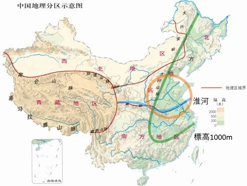
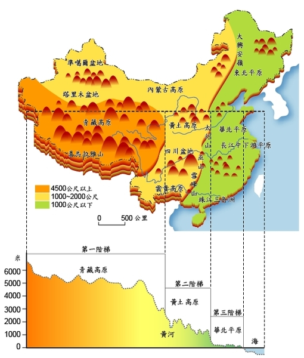

『魏晋南北朝』
公開日：
")
- 作者: 川勝義雄
- 出版社/メーカー: 講談社
- 発売日: 2003/05/09
- メディア: 文庫
- 購入: 2人 クリック: 10回
- この商品を含むブログ (13件) を見る
最近は“つまみ読み”が多くて、ここ二か月読了がなかったらしい。あかんあかん……。
本書は『魏晋南北朝』と銘打っているけれど、実際は後漢末期あたりから始まる。まぁ、巷に流布する“三国志”も前半分ぐらい（以上？）は正確に言うとまだ後漢の時代だから多少はね？ 曹操は帝位に就いてないもんねぇ。そこから延々、400年の歴史をコンパクトにおさめている。
――で、内容やけど
この本、たぶん中学ぐらいのときに読んだことあったと思う。なので、個人的には目新しい知見は得られなかった。本書は講談社版『中国の歴史』（1974年刊、全十巻）のうちの一冊だったのを独立させたものだそうだから、そっちで読んだのかもしれないなぁ。
なぜそんなことを覚えているのかというと、大学入試の世界史の論述が魏晋南北朝だったから。この本を読んだことがあったおかげで、相当楽をすることができた。ありがたいことだ。
本書のええところは、中国の地理にも目が配られていることろやね。

中国は淮河（とそれに連なって西方へ延びる秦嶺山脈）を境に華北と華南に分けられる。ここがちょうど年間降水量1000mmの境界になっていて、降水量の少ない北ではムギ栽培や畑作が中心で、降水量の多い南ではコメが作られるんやね。「南船北馬」などといって、華北では馬による移動、華南では船による移動が一般的だったりするのも違い。

ちなみに縦に入れた線は、標高1000mの線やね。なんで魏晋南北朝期の華北って東西に分かれてることが多いのかなーって思ったりすると思うんやけど、ちょっとヒントになるんじゃないかなと思う（ちなみに丸で囲ったところは“中原”って呼ばれてたあたりかなと思った地域。“鹿を追う”場所やの）。春秋戦国期やと、この奥座敷の高いところにいたのが中国を統一した“秦”やね。
| 標高1000m以上 | 標高1000m以下 | |
| 淮河以北 | 秦・周 | 燕・魏・斉 |
| 淮河以南 | 南朝（西府） | 南朝（北府） |
すんげえ適当に分けるとこんな感じやろか。南朝も横にだだっ広いから、南京あたりの“北府”と荊州（江陵・江夏）・益州担当の“西府”っていう二つの政府ができちゃって、“双頭の蛇”みたいになっとったんやねぇ。
――さてさて。
華北では平べったい地形に耕作ができる地域が点々としていたので、外来勢力が攻めてきたときに避難する場所として城塞都市が発達した。街ができるとそれらを結ぶ商業が発達し、文化と経済は急速に発展していく。
華南ではそういう意味ではかなり立ち遅れていた。春秋戦国時代の地図なんか見ると、江南の“楚”はやたらデカかいのに、割と弱かったりする（都落とされたりとか）。人がおらんのやね。三国の“呉”なんかは、人がおらんからと台湾・日本方面に人狩り遠征に出かけたりもしているぐらい（なお、返り討ちにあってむしろ人口が減った模様）。
しかし、南北朝期になると華北に異民族がダバーッと侵入してくる。すると、多くの漢人が江南に逃れてきた。その結果、華南の開発が進み、華北と肩を並べるか、それ以上の生産力を持つようになる。
一方、華北では街をとったりとられたりというのを相も変わらず何百年も続けることになった。それにはいろんな理由があるかとは思うが、一つに北朝諸国で制度の脱皮がうまくいかなかったことが挙げられるかも。
もともと異民族は牧畜・収奪を生業にしていて、それに適した氏族単位での軍政をとっていたのだけど、広大な農耕地域と支配層より数の多い漢族を治めるにはそれで不都合がある。また、氏族同士の内輪揉めが頻発し、長く安定した政権を築くことができなかった。なので、軍民分離・官僚化を進めなければならなかったが、どうしても支配民である異民族が武を、文化レベルの高い漢族が文を司るようになる。中華では文＞武の風潮の強かったので、当然、異民族側に不満がたまる。この不満が武力で覆される……そんなパターンやね。ときどきスゴいひとがバランスをとったときもあるけど、なかなかそんなの難しいわな。
また、漢族の士大夫層の方もけっして安泰ではなかった。商業の発達により、土地と人の支配に由来する権力は、相対的にその力を失っていった。また、漢末の人物評論・政治談議の気風が次第に失われ、切磋琢磨が行われなくなった結果、士大夫層は知的レベルが低下。江北から逃れてきた流民を束ねる実践力をそなえた武士層に、その政治的立場を譲っていくことになる。本書最後に挙げられてる『顔氏家訓』は印象的やったわ。
結果的に天下を統一したのは、華北の異民族由来の政権だった。隋唐といえば、日本人からすると“中国そのもの”って感じがするけれど、あれは異民族の王朝なんだな。そのせいか、唐王朝はかなり国際色豊かな開かれた王朝になるんだけど……それはまたいずれ。
それにしても、この時代のことを書いた本、目ぼしいのはこれぐらいしかないのだろうか。それはそれで寂しいことだ。『史記』や『漢書』『三国志』の役は多くても、『晋書』の訳なんか見たことないしなぁ。『世説新語』や『菜根譚』あたりは人気があるので、断片的なエピソードを知っている人は少なくないかもだけど。
追伸
やっぱ苻堅が一番魅力的やな。梁の武帝あたりも、すぐ身投げﾎﾟｲｰするあたりが面白いけど。